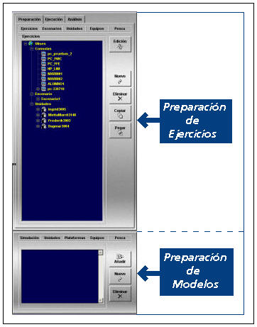

Preparación de Ejercicios
En la Pantalla de Presentación Cartográfica del Instructor, seleccionando la solapa Preparación en el Área de Preparación, Ejecución y Análisis de Ejercicios se accede a la función de Preparación de la Base de Datos.
La función de Preparación permite definir detalladamente todos los equipos y unidades que pueden participar en los distintos ejercicios, y establecer las características generales de los propios ejercicios.
Los modelos que incluye el Simulador admiten parámetros de configuración, de modo que ajustando correctamente dichos parámetros, se consigue simular una amplia gama de equipos y unidades dentro de distintos ejercicios, y con distintos escenarios. Todas estas configuraciones de equipos, unidades, escenarios y su incorporación en distintos ejercicios son almacenadas en una Base de Datos.
La Función de Preparación consta de dos ventanas principales: Preparación de Ejercicios y Preparación de Modelos. En la primera de ellas se presenta la lista de los ejercicios preparados. Para cada uno de los ejercicios puede desplegarse una estructura de árbol en la que se muestran las consolas asignadas al ejercicio, las unidades asignadas a cada consola y los equipos asignados a cada unidad participante en el ejercicio. Mediante la segunda ventana se pueden definir todos los modelos básicos.

El área de Preparación de Modelos permite al operador introducir en la Base de Datos los parámetros que definen cada uno de los modelos básicos necesarios para la creación y ejecución de un ejercicio.
El área de Preparación de Ejercicios permite elegir de la base de datos, las consolas y las unidades que van a participar en el ejercicio y situarlas dentro de un escenario geográfico, con unas condiciones meteorológicas y ambientales determinadas. En esta área también se configura la asignación de equipos a las unidades y la asignación de unidades a consolas.
En los siguientes apartados se describe el procedimiento a seguir para la preparación de modelos y ejercicios.